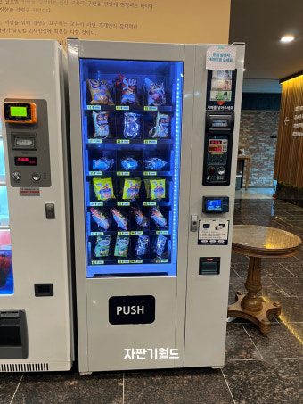
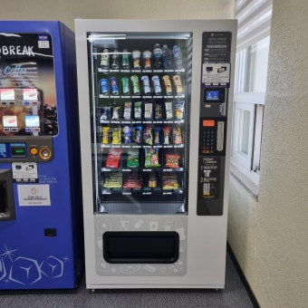
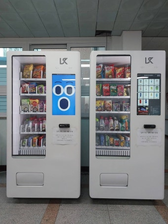
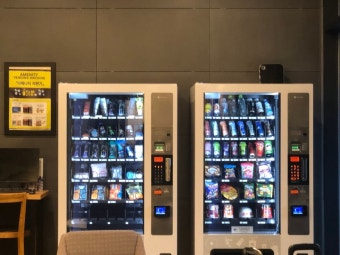

24시간 무인 운영
영업시간 제약이 없습니다. 매장이 문을 닫은 밤·새벽·주말에도 자판기는 계속 판매합니다.
음료·커피 자판기부터 스낵·과자, 아이스크림·냉동, 생활용품·잡화, 복합 멀티자판기까지. 매장과 입지를 먼저 보고 자리에 맞는 기종과 품목을 골라 전국에 설치해 드립니다. 설치비는 무료로 진행되며, 구매가 부담되시면 렌탈·임대로도 시작하실 수 있습니다.
무인자판기가 사장님 매장에서 하는 일은 단순합니다. 문 닫은 시간에도 팔고, 사람 손을 덜 쓰고, 매출은 휴대폰으로 확인되는 것.
영업시간 제약이 없습니다. 매장이 문을 닫은 밤·새벽·주말에도 자판기는 계속 판매합니다.
추가 인력 없이 운영됩니다. 임대·렌탈을 이용하면 초기 비용 부담을 크게 낮춰 시작할 수 있습니다.
신용카드는 물론 삼성페이·카카오페이·네이버페이·토스페이·QR 간편결제까지 한 대로 처리합니다.
어떤 품목이 몇 개 나갔는지, 무엇을 채워야 하는지 현장에 가지 않고 원격으로 확인합니다.
매장 앞, 복도, 엘리베이터 홀, 휴게실 같은 한 평 남짓한 공간이 그대로 매대가 됩니다.
입지와 유동 인원을 먼저 보고 기종·품목을 제안해 드립니다. 상담은 무료입니다.
무료 상담 신청 →같은 자판기라도 어디에 두느냐에 따라 잘 나가는 품목이 다릅니다. 매장과 입지에 맞춰 기종을 고릅니다.
캔음료·생수·이온음료·탄산, 원두커피와 캡슐커피까지. 사무실·오피스·헬스장에서 회전이 가장 빠른 기본 기종입니다.
과자·초콜릿·컵라면·간식류를 한 대에 담습니다. 회사 휴게실·탕비실의 직원전용 간식자판기로 문의가 많습니다.
아이스크림, 냉동식품, 밀키트까지 담는 냉동 기종. 무인 아이스크림 할인점·아파트 단지에서 강합니다.
세면용품·수건·면도기·위생용품·문구·화장품·마스크까지. 품목이 섞이는 자리에는 멀티자판기로 구성합니다.
자리마다 잘 나가는 품목이 다릅니다. 아래는 실제 문의가 많은 입지와, 그 자리에서 회전이 좋은 구성입니다.
단지 입구와 엘리베이터 홀처럼 생활 동선에 걸리는 자리에 두면 꾸준합니다. 반찬·계란·생필품 자판기 문의도 늘고 있습니다.
커피와 생수 회전이 빠릅니다. 공장은 교대 근무자를 겨냥해 야식·음료를 두껍게 채우고, 사내 복지용 직원전용 구성도 가능합니다.
이온음료·단백질 음료가 강하고, 세면용품·수건·면도기 같은 위생용품 수요가 함께 붙습니다. 냉장과 냉동을 나눠 채웁니다.
커피·간식·컵라면 수요가 큽니다. 프런트가 비는 시간에도 판매가 이어져 무인 운영과 특히 잘 맞습니다.
근처에 편의점이 없을수록 회전이 좋습니다. 음료·간식·부탄가스 같은 필수 품목 위주로 구성합니다.
입찰 공고와 계약 서류에는 자동판매기·셀프자판기라는 이름으로 나옵니다. 입지 선정부터 서류까지 함께 챙겨 드립니다.




무인매장·무인카페·무인아이스크림·무인사진관·셀프주문 매장에서 주문부터 결제까지 직원 없이 처리하는 무인키오스크를 전국에 설치해 드립니다. 좁은 매장을 위한 미니키오스크부터 대형 스탠드형까지 매장 크기와 업종에 맞춰 구성하며, 카드·삼성페이·카카오페이·네이버페이·QR 결제를 한 대로 처리합니다.
골프존·스크린골프장의 무인 접수·결제, 병원·의원·한의원의 무인 접수·수납, 무인정육점·무인마카롱·무인밀키트 매장처럼 24시간 직원 없이 운영하는 곳까지 업종과 매장 크기에 맞춰 세팅합니다. 설치비 무료로 진행되며 렌탈·임대도 가능합니다.
시·도를 선택하시면 해당 지역의 설치 가능 시·군·구를 확인하실 수 있습니다. 전국 어디든 방문 상담 후 설치합니다.
전화 또는 온라인으로 매장 위치, 업종, 원하시는 품목을 알려 주세요. 비용은 들지 않습니다.
공간 크기, 전기 위치, 동선과 유동 인원을 직접 확인하고 어떤 기종이 맞는지 판단합니다.
구매·렌탈·임대 중 어떤 방식이 유리한지, 품목 구성은 어떻게 가져갈지 견적과 함께 제안합니다.
기기 반입·전원 연결·결제 단말 등록·상품 진열까지 마치고 바로 판매 가능한 상태로 넘겨 드립니다.
매출·재고 원격 확인 방법을 안내하고, 상품 보충과 고장 대응까지 이어서 지원합니다.
자판기 창업 설치비용과 수익 구조, 직접 운영과 위탁운영의 차이까지 부풀리지 않고 알려 드립니다. 무인점포·무인편의점·무인문구점·무인아이스크림 할인점 창업도 함께 도와드리며, 소자본으로 부업·투잡을 시작하는 사장님이 많습니다.